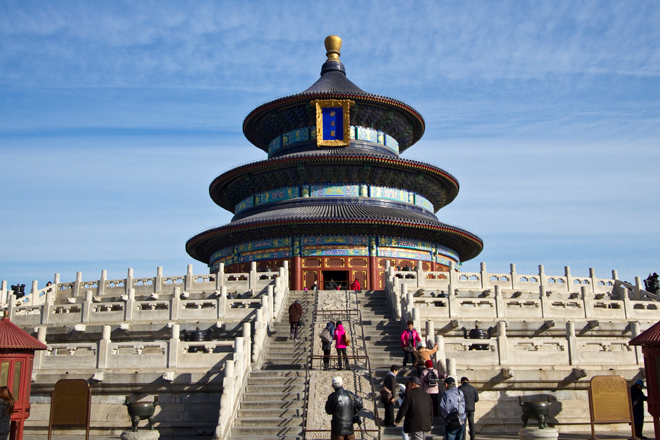
.
The Temple of Heaven is an imperial complex of religious buildings situated in the south-eastern part of central Beijing. The complex was visited by the Emperors of the Ming and Qing dynasties for annual ceremonies of prayer to Heaven for good harvest.
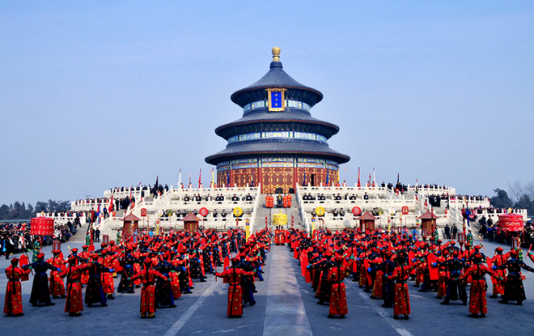
The temple complex was constructed from 1406 to 1420 during the reign of the Yongle Emperor, who was also responsible for the construction of the Forbidden City. The complex was extended and renamed Temple of Heaven during the reign of the Jiajing Emperor in the 16th century.
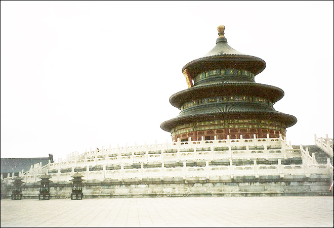
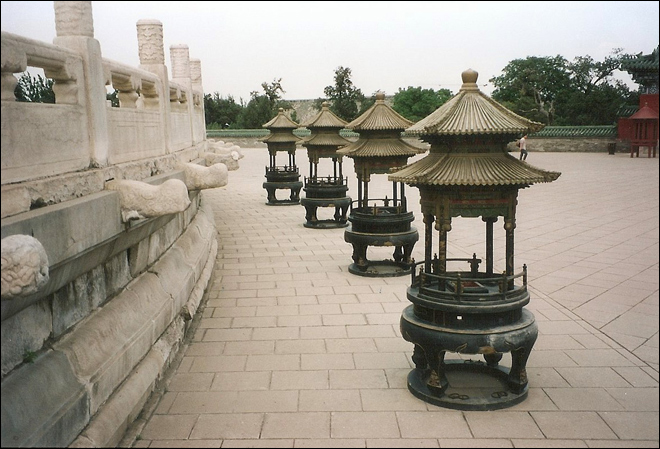
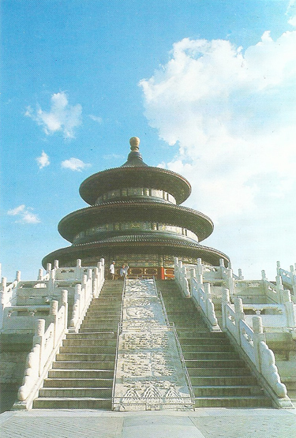
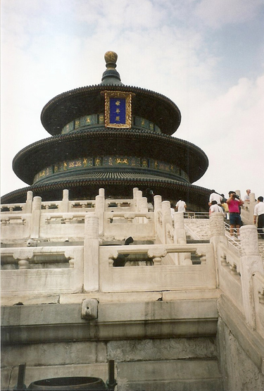
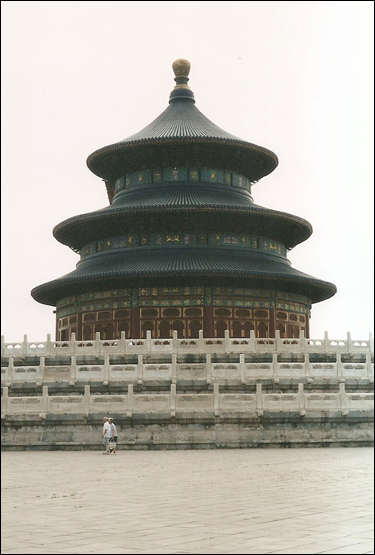
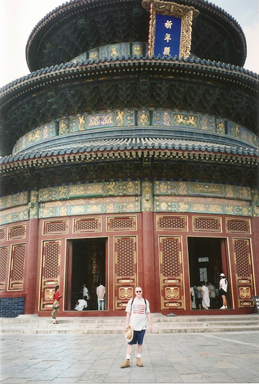
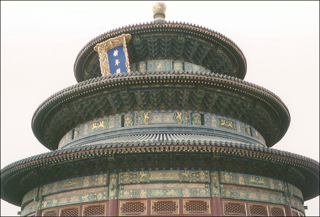
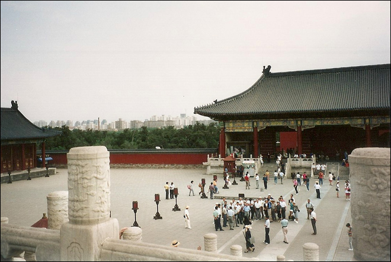
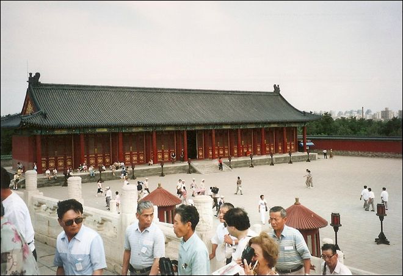
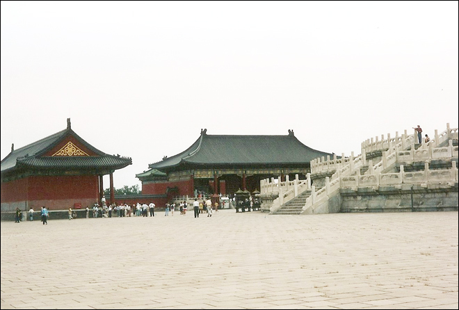
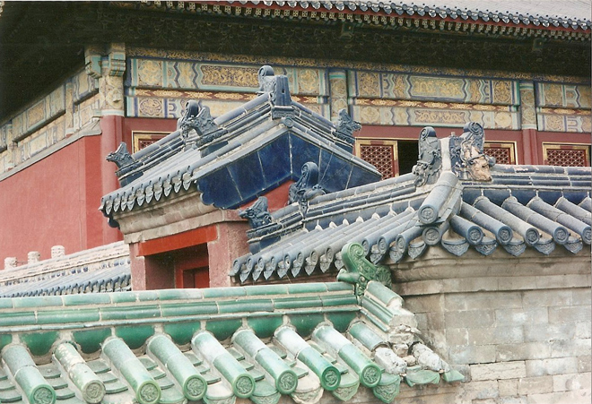
Despite hordes of tourists filling the tourist site, a lone sweeper silently clears up after them.
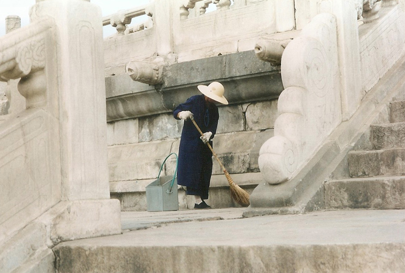